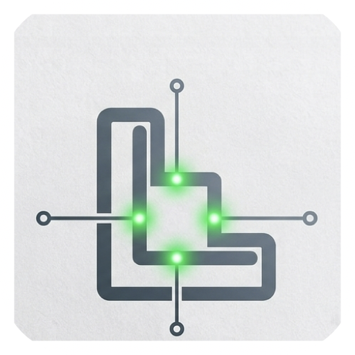

Start with one. Grow to four.
Open another terminal with the + button or a shortcut. Tile arranges the panes as you go.

tile.A calmer place to work
Tile brings up to four live terminals into one clean macOS workspace. Open a pane, keep your command running, and stay in the flow.
Illustration of the four-pane layout
BUILT AROUND YOUR FLOW
Open another terminal with the + button or a shortcut. Tile arranges the panes as you go.
Drag a running terminal between panes and windows, including windows on another display.
Expand a pane to work without distraction, then return to your split workspace.
GET TILE
Download the current macOS preview and open Tile to start your first workspace.
macOS 15 or later · Apple Silicon only · ZIP, 5.2 MB
This preview is not yet Developer ID signed or notarized, so macOS may block it on first launch.
Preview build · v0.1.0